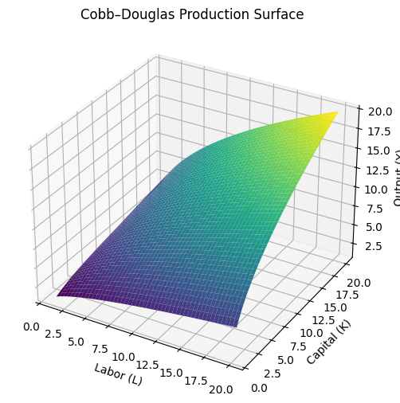
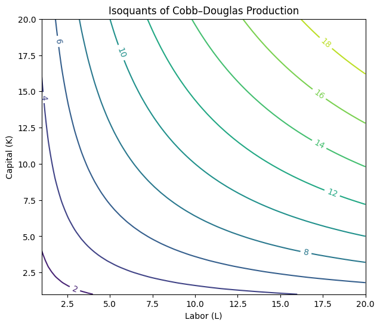
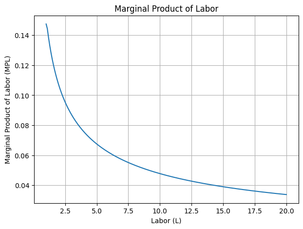
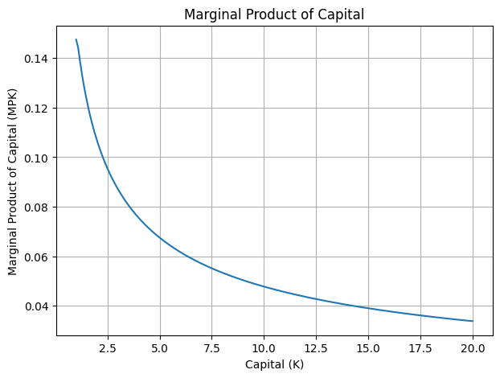
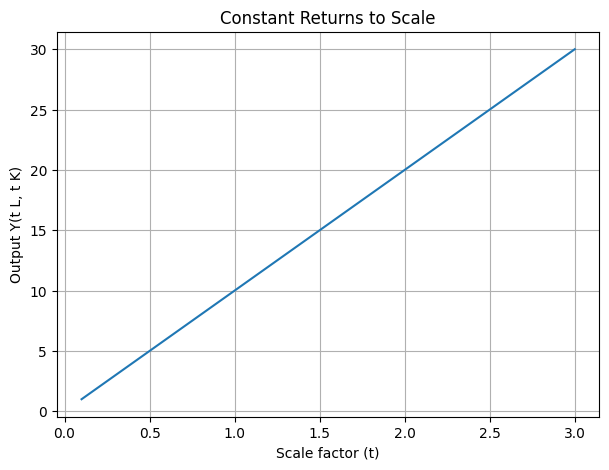
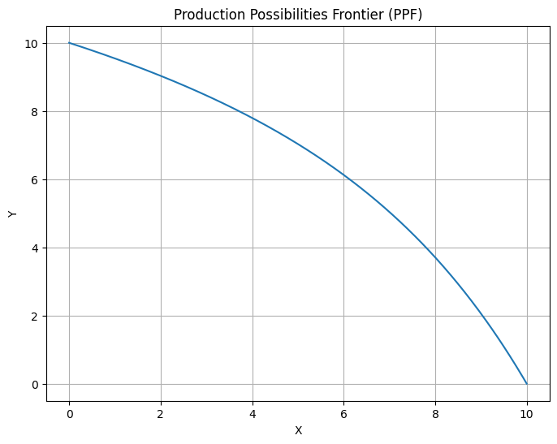
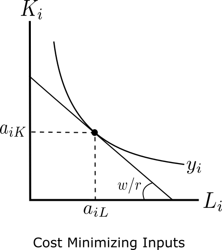
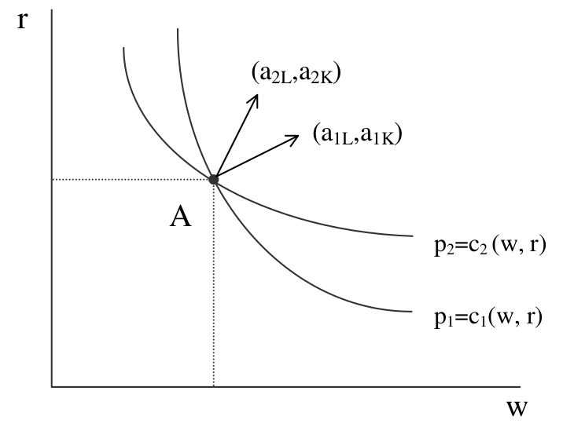
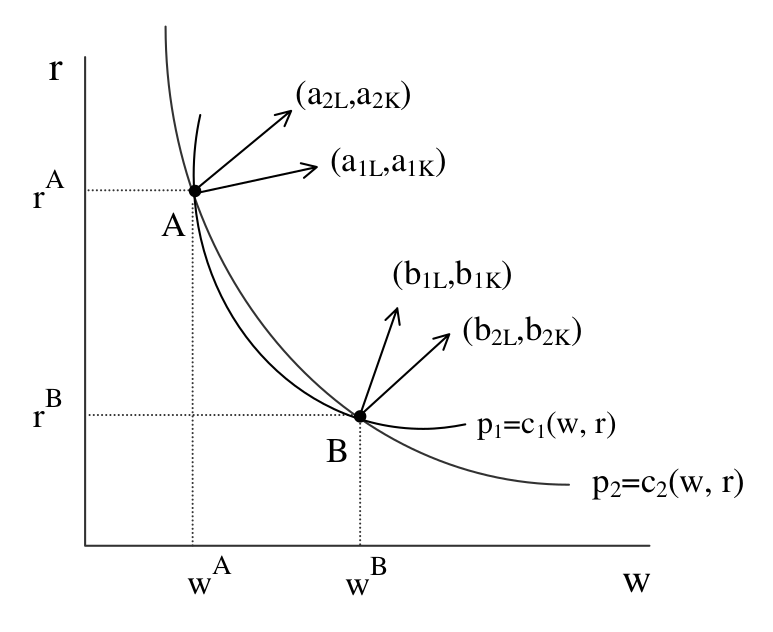
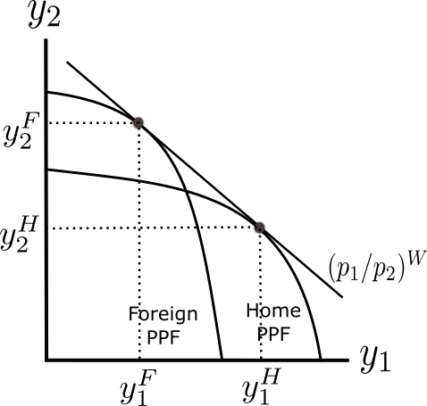

The Heckscher-Ohlin Model of Trade#
The Heckscher-Ohlin (HO) model shows how countries’ resources, such as labor and capital, determine their comparative advantage and pattern of trade. This is an alternative story to that of the Ricardian model which assumes the source of comparative advantage is differences in productivity. In the real world, however, trade also reflects differences in a countries’ resources. For example, Canada’s forest industry is export-oriented due to its vast forest resources relative to its small population, not because it’s lumberjacks are especially productive. Canada has one of the largest forested areas in the world, similar in size to the United States, but with a population approximately one-tenth the size of the U.S. As a result, Canadian lumber production of approximately 20 billion board feet in 2024 exceeds domestic consumption of about 7 billion board feet, creating a surplus which is directed toward export markets. The U.S. remains the dominant market, absorbing over 80% of Canadian softwood lumber exports by volume, with the value of these exports exceeding $8 billion annually. This trade pattern is driven by resource availability, not superior productivity of Canadian forestry.
Although it is not surprising that a country with an abundance of forest resources, or oil, or any other natural commodity tends to export it; the HO theory offers a counterintuitive insight: trade in goods offers an indirect mechanism to exchange factors of production. The HO model reminds us that goods are really bundles of factors services (labor, capital, land), so that an international shipment of goods is an indirect transfer of otherwise immobile factor services. The source of comparative advantage therefore stems from the relative abundance of resources in concert with how intensively a country’s technology uses those resources to produce certain goods. A country abundant in labor, tends to exports goods which disproportionately rely on labor services. Exporting such goods is an indirect way of exporting its domestic labor services to the rest of the world which has the effect of increasing wages. Under certain conditions, this indirect trade in resources can eliminate all differences in factor prices between countries–a phenonema known as factor price equalization.
This movement in factor prices implies that trade effects the distribution of income within a country: some people are made better off from trade, and some are made worse off. This is especially relevant for policy discussions regarding how trade may hurt workers in certain sectors.
The Heckscher-Ohlin Environment#
We consider the following environment:
Two countries: Home and Foreign
Two goods: \(i = 1,2\)
Two factors: labor (\(L, L^*\)) and capital (\(K,K^*\))
The Production Function#
Compared to the Ricardian model, the only difference is that there are now two factors of production instead of one. It turns out that this small changes makes a big difference! With two inputs, firms have many different possible methods of producing goods. We describe how inputs are transformed into goods using a production function.
where \(y_i\) is the amount of good produced using labor \(L_i\) and capital \(K_i\). The production function is assumed to be increasing, concave, and homogeneous of degree one. One such production function is the Cobb-Douglas production function
Below is a three-dimensional plot of the Cobb-Douglas production function with \(A=1\) and \(\alpha=0.5\).

Any point on the floor of the diagram picks a specific combination of labor and capital. The value of the production surface at that point–the height of the graph–determines how much output is produced with the given labor and capital. The fact that the production function is increasing means that if firms use more labor or more capital they produce more output. Notice that for any given level of output \(y\), there exists many different combinations of labor \(L_i\) and capital \(K_i\) that can achieve this. Graphically, we fix the value of \(y\)–the height of our three-dimensional surface–and observe the resulting combinations of \(L\) and \(K\) which produce \(y\). We are horizontally “slicing” our surface at a particular height, and recording the different amounts of capital and labor and produce that appear on the floor.
The resulting curves are called isoquants: different combinations of inputs which generate a fixed level of output. Below are the isoquants for the Cobb-Douglas function we are considering.

Curves further from the origin represent higher levels of output \(y\). We can see that firms may choose to produce \(y\) using a lot of capital with little labor; a lot of labor with little capital, or some intermediate combination of the two. It remains to be seen what combination a firm actually chooses, but we can anticipate that it will depend on the cost of employing labor and the cost of using capital. Before we discuss the solution to this problem, let’s investigate why the curves are themselves convex to the origin.
Recall that we assume our production function \(y_i = f_i(L_i,K_i)\) is concave. Economically, this means that the production process exhibits diminishing marginal products: each additional unit of input yields less extra output. The marginal products of labor and capital are
Below we plot these marginal products.


While additional units of either labor or capital always generate extra output (\(MPL>0,MPK>0\)), they do so at a diminishing rate. Said simply, the 100th worker is not as productive as the 1st worker, holding capital constant.
When we say that the production function is homogeneous of degree 1, economically this is called constant returns to scale: if we double the amount of all inputs, then we generate double the amount of output. Formally, a function is homogenous of degree \(k\) if it satisfies
Homogeneity of degree 1 is therefore \(k=1\) so that, for example, doubling the amount of inputs generates twice as much output: \(f(2K,2L)=2f(K,L)\). Below we simply plot the amount of output generated for different values of \(\lambda\) under constant returns to scale \(k=1\).

The Production Possibilities Frontier#
Lastly, we want to show what are all the possible combinations of output for two different goods given some amount of fixed labor \(L\) and capital \(K\), assuming that both factors are fully mobile between the two industries. Denote by \(X\) and \(Y\) the goods to be produced so that the production technologies are described by,
Factor market clearing tells us that labor used in production must equal total labor supply, and capital used in production must equal total capital stock:
We seek to understand all the feasible production plans for the two goods. Formally, we can deduce this by maximizing the amount of good \(Y\) produced for a given level of good \(X\). Formally, we write
This constrained optimization problem can be solved using the Lagrangian:
The first-order conditions obtain
Substituting out the Lagrange multipliers \(\mu_K\) and \(\mu_L\) from the four equations,
Dividing the second equation by the first, we get:
By the factor market clearing conditions, this becomes:
By definition, \(\partial F_Y(K_y, L_y)/\partial L_Y\) is \(MPL_Y\) and \(\partial F_Y (K_y, L_y)/\partial K_Y\) is \(MPK_y\) (and similarly for the \(X\) sector)
Then the above equation is:
The marginal rate of technical substitution (RTS) for some good \(i\) is \(RTS_i = −\frac{MPL_i}{MPK_i}\). Then the above equation is equivalent to:
This equality is evaluated subject to factor market clearing.
We now derive the PPF for a Cobb Douglas production of the form:
First, let’s list all the marginal products for a Cobb-Douglas production function:
We can use these to compute the marginal rate of technical substitution for both \(X\) and \(Y\) and equate them:
Finally, we apply factor market clearing
to write
Solving for \(L_X\) obtains
At this point, we can describe the amount of output \(X\) for a given \(K_X\) since \(X = K_X^{\alpha}L_X^{1-\alpha}\).
Similarly, we can use factor market clearing for the \(Y\) sector to write
and solving for \(L_Y\) obtains
At this point we have described the production possibilities frontier in parametric form:
For any value \(K_X\), we can compute the efficient level of output for goods \(X\) and \(Y\). Below, we plot this PPF by plugging a range of values for \(K_X\).

Where Does the Economy Operate on the PPF?#
Where on the PPF does the economy actually produce? It depends on goods prices: the economy will always produce at the point that maximizes the value of production.
If the price of good 1 is relatively high, the economy will produce more of good 1 and less of good 2
If the price of good 2 is relatively high, the economy will produce more of good 2 and less of good 1
The value of production (GDP) is given by
Formally, the gross domestic production (GDP) for the economy is given by
where the constraint is precisely the PPF we described earlier.
The first order condition for this problem is,
which show that the maximized value of GDP is where the PPF is tangent to the GDP line.
We now prove that the competitive economy indeed operates in this way. Recall that in a competitive equilibrium, factors are always paid their value marginal products:
Notice that these equations also reflect the ability of labor and land to freely move between sectors. For example, workers will always choose work in the sector that pays a higher wage, therefore, the only way that both sectors produce good is if the wage is the same in both sectors.
We can take the ratio of the equations like this
Using our definition of marginal products we can write
and realizing that the total supply of labor and land is fixed we know that \(dL_1 = -dL_2\) and \(dT_1=-dT_2\) so we can say
The righthand side is exactly the slope of the PPF! This proves that in a competitive equilibrium, resources are indeed allocated in such a way which maximizes GDP.
The figure below shows that once we know the relative price \(p_1/p_2\), we can determine the optimal production of \(y_1,y_2\).
The Relative Supply Curve#
What we have derived is the amount of good 1 and good 2 firms are willing to supply at different relative prices. We can convey the same information in a different diagram to show the country’s relative supply curve. Below we show how to sketch the relative supply curve from the PPF.
INSERT PPF AND ACCOMPANYING SUPPLY CURVE
Autarky Equilibrium Prices#
In order to determine the equilibrium relative price in autarky we simply need to find that price which equalizes the relative demand for the two goods to their relative supply. Diagramatically, we need to draw a relative demand curve and find the unique intersection. To have a well-behaved demand curve, we only need to assume that preferences are identical and homothetic across countries so that relative demand is a function of relative price only,
This asssumption is sufficient to generate a smooth downward sloping demand curve, and thereby compute the equilibrium autarky relative price
INSERT SUPPLY AND DEMAND DIAGRAM
A First Glance at how Factor Endowments Matter#
At this point, we can begin to understand how the amount of factor endowments and intensity with which goods use this factors matter for the equilibrium price. For example, suppose that good 1 uses a higher amount of labor services relative to capital compared to good 2. If this country experiences an increase in its labor endowment, then the shape of the PPF will be stretched toward the right. This is because good 1 uses labor intensively, and so the extra labor endowment allows for much more produciton of good 1 compared to good 2. We can say that the PPF becomes more “skewed” toward the production of good 1. Since the shape of the PPF has changed, so to does the positive of the relative supply curve. Since the PPF is skewed toward the production of good 1, for any given relative price \(p_1/p_2\) the economy will optimally produce more \(y_1\) and less \(y_2\) than before. Therefore, we can say that the relatie supply curve shifts to the right, resulting in a lower equilibrium price.
This should build some intuition regarding how endowments matter for the pattern of comparative advantage: endowments affect the relative positions of each country’s supply curve and thereby determined which country has a lower autarky price in which good. In the following material, we prove that a higher factor endowment does indeed bias the PPF toward the good which uses that factor intensively (Rybzynski theorem), and then discuss implications for how the returns to factors are affected by changes in equilibrium goods prices (Stolper-Samuelson theorem).
Firms’ Employment of Factors#
At this point, once we know the goods prices \((P_1,P_2)\), we know the amount of each good produced \((Y_1,Y_2)\). Given a level of production, firms still have a choice about what combination of capital (\(K\)) and labor (\(L\)) they want to use to produce each good. Although firms have many possible ways of combining labor and capital to create goods, we denote the actual amount of inputs used to produce one unit of good &i$ by the tuple
Although these are similar to the unit input requirements defined in the Ricardian model (for labor at least), there is an important difference: we are talking about the quantity of capital or labor used in production, not the amount of capital or labor required. What combination of inputs do produces actually use? It depends on factor prices: producers will minimize cost by using more of the factor that is relatively cheaper. If capital rental rates (\(r\)) are high and wages (\(w\)) low, producers will choose to use relatively little capital and a lot of labor. Conversely, if wages are low and rental rates are high, producers will choose to use relatively little labor and a lot of capital
It will be convenient to work with the unit cost functions,
which describe the minimum cost to produce one unit of output. The cost minimization problem is seeking the smallest iso-cost line \(wL_i+rK_i\) such that the amount of labor and capital used generates one unit of output \(f_i(L_i,K_i) = 1\). Diagramatically, this is finding the iso-cost line nearest the origin while remaining on the isoquant which represents one unit of output. Clearly, this occurs where the iso-cost line is tangent to the isoquant; where the wage-to-rental rate \((w/r)\) is equal to the marginal rate of technical substitution \(MPL/MPK\).

For any given wage and rental rate \((w,r)\), the firm optimally uses \((a_{Li},a_{Ki})\). Higher wage rates (or lower rental rates) rotate the iso-cost line clockwise resulting in firms optimally using less labor \((\downarrow a_{Li})\) and more capital \((\uparrow a_{Ki})\).
We will write the solution to the minimization problem above as,
where \(a_{iL}\) is the optimal choice for \(L_i\) and \(a_{iK}\) is the optimal choice for \(K_i\).
We have shown that for any given factor prices \((w,r)\), we can find the cost minimizing combination of labor and capital \((a_{iL},a_{iK})\). We can convey this same information in a different graph which plots \((w/r)\) on the vertical axis and the ratio of labor-to-capital used to produce one unit of good \((a_{Li}/a_{Ki})\) on the horizontal axis:
As drawn above, the input choice for good 1 is shifted out compare to good 2. This means that for any relative factor prices good 1 requires relatively more labor than capital compared to good 2. We therefore say that:
good 1 is labor-intensive
good 2 is capital-intensive
Mathematically we recognize that this implies
\(\Rightarrow\) a good cannot be both capital- and labor-intensive.
Notice that our definition of intensity relies on the ratio of labor to capital used in production, not the ratio of labor or capital to output.
Definition: Intensity
Good 1 is said to be labor intensive if
it must then be that Good 2 is capital intensive since
Equilibrium Factor Prices#
The final objects to determine are the equilibrium wage and rental rate \((w, r)\). Under perfect competition, free entry drives economic profits to zero in every active sector, giving the zero-profit conditions:
where \(c_j(w,r)\) is the unit cost function for sector \(j\). Full employment of both factors requires:
where \(a_{jL}\) and \(a_{jK}\) denote the unit labor and capital requirements in sector \(j\), and \(L_j = a_{jL}y_j\), \(K_j = a_{jK}y_j\) are the factor demands of each sector.
Definition: Equilibrium in HO Model
An equilibrium is a set of goods prices \((p_1,p_2)\), factor prices \((w,r)\) and outputs \((y_1,y_2)\) such that profits are zero and factors are fully employed.
Factor Price Insensitivity and Factor Intensity Reversals#
A central result of the HO model is factor price insensitivity: so long as both goods are produced and factor intensity reversals (FIRs) do not occur, each vector of goods prices \((p_1, p_2)\) corresponds to a unique vector of factor prices \((w, r)\), regardless of the economy’s factor endowments. The zero-profit conditions alone are sufficient to pin down \((w, r)\).
To understand when this result holds — and when it fails — it is useful to examine the zero-profit loci directly. For each sector \(j\), the break-even curve \(p_j = c_j(w, r)\) traces all combinations of \((w, r)\) consistent with zero profits, for given goods prices. The slope of this curve at any point reflects the capital-labor ratio in that sector: a more capital-intensive sector has a steeper break-even curve in \((w, r)\) space.
No FIRs. If one sector is unambiguously more capital-intensive than the other at all factor price ratios, the two break-even curves have a consistent ranking of slopes everywhere, and they intersect exactly once. A unique \((w, r)\) is therefore associated with any given \((p_1, p_2)\), confirming factor price insensitivity.

FIRs present. If the relative capital intensity of the two sectors reverses at some factor price ratio — meaning sector 1 is capital-intensive at low \(w/r\) but labor-intensive at high \(w/r\) — then the slopes of the break-even curves cross, producing multiple intersections. In this case, the zero-profit conditions are no longer sufficient to determine \((w, r)\) uniquely; the full employment conditions must also be imposed to select among the candidate equilibria.

From Goods Prices to Factor Prices: The \(FG\) Curve#
In the absence of FIRs, there is a well-defined monotone relationship between the relative goods price \(p_1/p_2\) and the relative factor price \(w/r\). This relationship — the factor goods (\(FG\)) curve — is plotted below. Its upward slope reflects the Stolper-Samuelson logic: an increase in the relative price of good 1 raises the real return to the factor used intensively in sector 1.
The full chain of logic connecting goods prices to production decisions runs as follows. Given a relative goods price \(p_1/p_2\):
The \(FG\) curve determines the equilibrium relative factor price \(w/r\).
Given \(w/r\), each sector’s cost-minimizing factor intensity is read off the factor isoquant (\(FI_j\)) curves: producers in the more capital-intensive sector choose a higher capital-labor ratio, \(a_{2K}/a_{2L} > a_{1K}/a_{1L}\).
Given factor intensities and the full employment conditions, equilibrium outputs \((y_1, y_2)\) are determined.
The Winners and Losers from Trade#
A central question in trade theory is not merely whether trade raises aggregate welfare, but how its gains and losses are distributed across factors of production. The Stolper-Samuelson theorem provides a sharp answer within the HO framework.
Stolper-Samuelson Theorem
An increase in the relative price of a good will increase the real return to the factor used intensively in that good, and reduce the real return to the other factor.
Since opening to trade changes relative goods prices, it follows immediately that trade redistributes income between factors — even if it raises aggregate welfare. Identifying who gains and who loses requires tracing the link from goods prices to factor prices precisely.
Derivation#
Begin with the zero-profit conditions under perfect competition:
Totally differentiating:
Dividing both sides by \(p_i = c_i(w,r)\) and multiplying and dividing each term on the right by the relevant factor price converts this into an expression in percentage changes and cost shares:
Define the cost shares:
\(\theta_{iL} \equiv \dfrac{w\, a_{iL}}{c_i}\): the share of labor costs in sector \(i\),
\(\theta_{iK} \equiv \dfrac{r\, a_{iK}}{c_i}\): the share of capital costs in sector \(i\),
with \(\theta_{iL} + \theta_{iK} = 1\) for each \(i\). Using hats to denote proportional changes (\(\hat{x} \equiv dx/x = d\ln x\)), the zero-profit conditions become:
This is a \(2\times 2\) linear system in the unknown factor price changes \((\hat{w}, \hat{r})\):
Applying Cramer’s rule, with \(|\Theta| = \theta_{1L}\theta_{2K} - \theta_{1K}\theta_{2L}\) denoting the determinant of the cost-share matrix:
The Amplification Effect#
To interpret these expressions, suppose that sector 1 is labor-intensive relative to sector 2:
This implies \(|\Theta| = \theta_{1L} - \theta_{2L} > 0\) (using \(\theta_{iL} + \theta_{iK} = 1\)). Now suppose the relative price of the labor-intensive good rises: \(\hat{p}_1 > \hat{p}_2\). Substituting into the Cramer’s rule expressions and rearranging:
so that:
This chain of inequalities — sometimes called the magnification effect — is the formal content of the Stolper-Samuelson theorem. The wage rises by more than either goods price, implying that labor’s real purchasing power increases regardless of which good workers consume. The return to capital falls by more than either goods price falls, so capital owners suffer an unambiguous real loss. The distributional effects of a price change are thus amplified relative to the price change itself — trade does not merely redistribute income at the margin, it creates clear-cut winners and losers in real terms.
The policy implication is stark: within the HO framework, the owners of a country’s scarce factor have a genuine material interest in opposing trade liberalization, even if trade raises aggregate national income. Protection is not simply the result of ignorance or special interests — it can reflect the rational preferences of those who stand to lose.
Predicting the Pattern of Trade#
The Ricardian model attributes comparative advantage to differences in technology. The Heckscher-Ohlin model offers a complementary explanation: even with identical technologies, countries differ in their relative factor endowments, and these differences alone are sufficient to generate comparative advantage, specialization, and gains from trade.
We assume that Home and Foreign share the same preferences and the same production technology, but differ in their relative endowments of labor and capital:
Home is labor-abundant: \(L/K > L^*/K^*\),
Foreign is capital-abundant: \(K^*/L^* > K/L\).
We retain the assumption that good 1 is labor-intensive and good 2 is capital-intensive. The key question is: how do these endowment differences translate into differences in comparative advantage?
Because good 1 is labor-intensive, an economy with a relatively large labor endowment will find that its production possibilities are shifted out disproportionately in the direction of good 1. Home’s production possibility frontier is therefore biased toward good 1 relative to Foreign’s.
With identical and homothetic preferences, the consumption ratio is the same function of relative prices in both countries. Since Home’s PPF is biased toward good 1, its autarky relative supply of good 1 is higher, and its autarky relative price of good 1 is therefore lower: \((p_1/p_2)^H < (p_1/p_2)^F\). Home has a comparative advantage in good 1 — not because of any technological difference, but purely as a consequence of its relative factor abundance.
The endowment bias carries over to relative supply at any given world price. For any common goods price ratio, Home — being labor-abundant — will allocate relatively more resources to the labor-intensive sector and produce a higher ratio of good 1 to good 2 than Foreign.

By the same logic applied symmetrically, Foreign’s relative supply of good 2 is higher at every price, reflecting its capital abundance and the capital intensity of good 2.
Opening to trade equalizes relative goods prices across countries, moving both economies away from their autarky price ratios toward the common world price. Since \((p_1/p_2)^H < p_1^W/p_2^W < (p_1/p_2)^F\), the world price lies strictly between the two autarky prices — trade raises the relative price of good 1 at Home and lowers it at Foreign.
Home therefore expands production of good 1 and exports the surplus; Foreign expands production of good 2 and exports it. This is the central prediction of the model:
Heckscher-Ohlin Theorem
Each country will export the good that uses its abundant factor intensively.
The logic is worth stating precisely: Home exports good 1 not because it has a technological edge in producing it, but because its relative abundance of labor lowers the autarky cost of the labor-intensive good, generating comparative advantage endogenously from endowments alone.
Extension to Many Goods, Factors, and Countries#
In the two-good, two-factor case the theorem delivers a sharp prediction about the direction of trade. With multiple goods, factors, and countries, exact predictions about bilateral trade flows are harder to establish, but the core insight survives in a weaker form: countries tend to export goods whose production is intensive in factors with which they are abundantly endowed. This prediction has been the basis of a large empirical literature, which we turn to next.
Trade and the Distribution of Income#
We established that opening to trade causes relative goods prices to converge toward the world price. For Home — which has a comparative advantage in the labor-intensive good 1 — this means a rise in \(p_1/p_2\). Applying the Stolper-Samuelson theorem derived earlier, the consequences for factor incomes follow directly:
A rise in the relative price of the labor-intensive good raises the real wage in terms of both goods, and reduces the real return to capital in terms of both goods.
The distributional implications are therefore unambiguous within the HO framework:
Hecksher-Ohlin’s prediction on the distribution of income
:class: definition
Owners of a country’s abundant factors gain from trade, but owners of a country’s scarce factors lose.
At Home, where labor is abundant, workers benefit and capital owners are hurt. At Foreign, where capital is abundant, the gains and losses are reversed. These are not transitional effects — they are permanent consequences of the change in relative prices that trade induces.
It is important to note that trade still expands the economy’s aggregate consumption possibilities: the gains to the winners exceed the losses to the losers in principle, so that aggregate welfare rises. But the HO model offers no mechanism by which those gains are automatically shared. Redistribution from winners to losers requires explicit policy intervention — trade liberalization alone does not deliver it.
A Contemporary Illustration: US–China Trade#
The distributional logic of the HO model speaks directly to one of the most consequential trade debates of recent decades. The US is relatively abundant in high-skilled labor and capital, and relatively scarce in low-skilled labor. China, by contrast, entered global markets as an economy with an abundance of low-skilled labor. The HO framework predicts precisely what the political economy of the period reflected: trade integration with China would tend to raise returns to high-skilled labor and capital in the US while putting downward pressure on the wages of low-skilled and manufacturing workers — not as a temporary adjustment cost, but as a permanent feature of the new equilibrium.
This prediction aligns with a substantial body of empirical work. Manufacturing workers in the US had a genuine material interest in protection from import competition, and the political pressure they exerted reflected real economic losses, not a misunderstanding of aggregate gains. The HO model thus provides a coherent framework for understanding why the distributional consequences of trade liberalization, rather than its aggregate effects, tend to dominate the political debate.
Factor Price Equalization#
The convergence of goods prices under trade has an even stronger implication: if goods prices equalize across countries, and if factor prices are uniquely determined by goods prices (as established by the factor price insensitivity result), then factor prices must equalize too.
In autarky, labor-abundant Home faces a lower relative price of the labor-intensive good than capital-abundant Foreign. This difference in goods prices is reflected in a difference in factor prices: wages are relatively low and rents relatively high at Home, and the reverse holds at Foreign. Trade eliminates the goods price differential — and with it, the factor price differential.
Factor Price Equalization Theorem
:class: definition
Under free trade, factor prices are equalized across countries, provided both countries produce both goods and share the same technology.
The result has a striking implication: although Home has a higher ratio of labor to capital than Foreign, free trade drives wages and rental rates to identical levels in both countries. The mechanism is indirect but precise. By trading goods, countries are in effect trading the factors embodied in them:
Home exports goods produced with a high labor-capital ratio, effectively exporting labor services indirectly.
Foreign exports goods produced with a high capital-labor ratio, effectively exporting capital services indirectly.
Trade in goods thus serves as a substitute for the direct international mobility of factors. Even without migration or capital flows, factor markets are linked through trade.
Why Factor Price Equalization Fails in Practice#
Factor price equalization is not observed empirically — wage gaps across countries are large and persistent. The theorem rests on assumptions that are unlikely to hold simultaneously in practice:
Identical technology: production functions are assumed the same in every country, but in reality technological differences across countries are substantial and persistent.
Costless trade: the theorem requires that goods prices fully equalize, which in turn requires zero transport costs, no tariffs, and no other trade barriers.
Diversification: both countries must produce both goods in equilibrium; if either country fully specializes, the tight link between goods prices and factor prices is broken.
The failure of factor price equalization in practice does not, however, invalidate the broader HO mechanism. It suggests instead that a richer model — one that relaxes some of these strong assumptions — is needed to account quantitatively for observed patterns of trade and factor prices. The core insight that factor endowments shape comparative advantage and trade patterns survives even when the knife-edge conditions required for full factor price equalization are not met. We return to the empirical evidence for and against the HO framework in the next section.